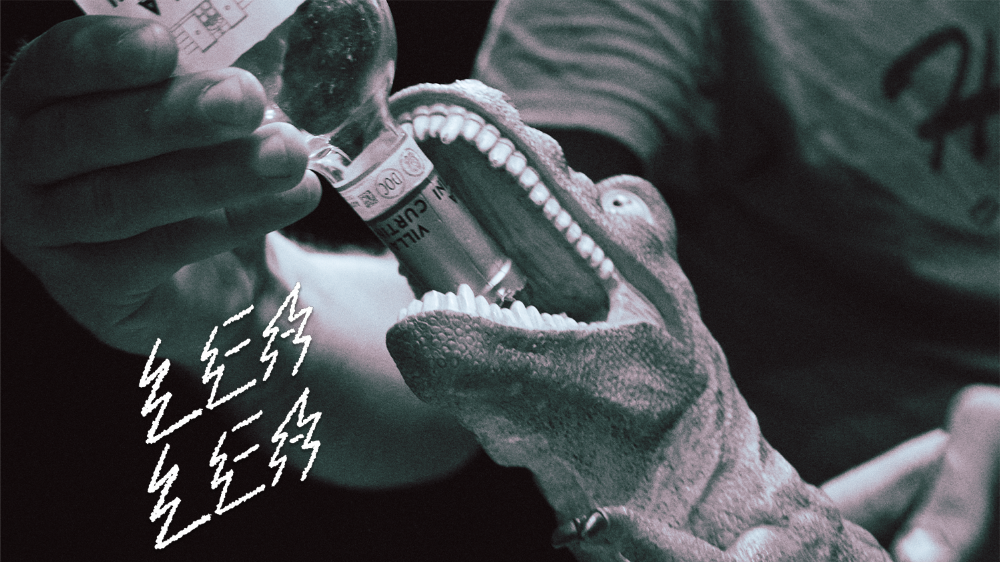

PORTFOLIO PERSONALE
Progetti che realizzo per passione e voglia di comunicare, tra ricerca visiva e sperimentazione.

Sebastiano Sorbello
sebisorb
Formazione artistica e tecnologica, specializzato in Foto e Video. Fin da piccolo ho avuto una forte fascinazione verso la creazione, dalla sartoria alle armi per le avventure in campagna. Nella prima adolescenza scopro la musica ed inizio a suonare la chitarra. Venendo escluso dalla band di amici, decido quindi di reindirizzare la mia voglia di creare nella mia passione per il cinema. Inizio così a sperimentare nella produzione di corti demenziali ed in seguito progetti più autoriali e antropologici. Culminando infine in una formazione professionale che oggi applico a progetti di fotografia e videografia.
Strumenti che uso

Progetti che realizzo per passione e voglia di comunicare, tra ricerca visiva e sperimentazione.

Fotografia professionale per ristoranti e locali. Shooting live, studio e servizio.

Documentarismo, messa in scena e narrazione demenziale.

Fotografia editoriale e reportage per riviste, pubblicazioni e progetti culturali.